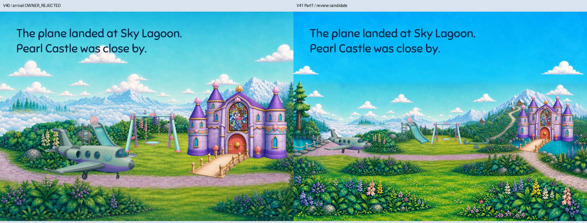
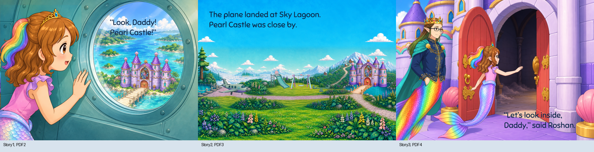
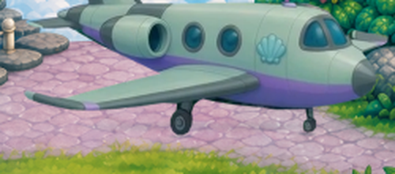
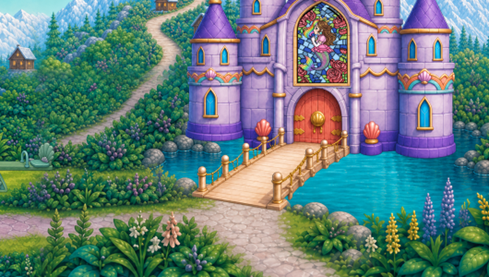
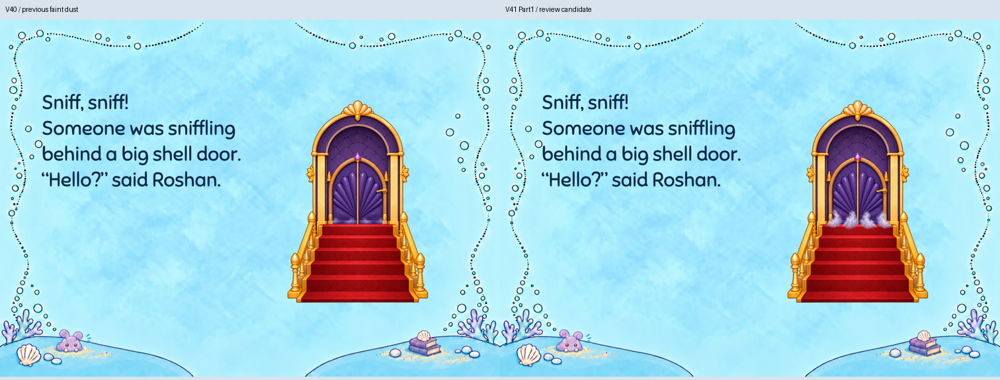

Owner rejected V40 arrival. Both original waters, rope-post approach, playground, landing path, mountain route and current four-tower castle now fit in one complete setting. Only sky/foreground extensions and bounded edge joins use generated repair. B2/A9 closed as not needed at11in; print Part2 held for owner illustration acceptance.
Read · Reading PDF · Source and edge recipe · All prompts/takes/references · Independent critique · Five focused reviews




